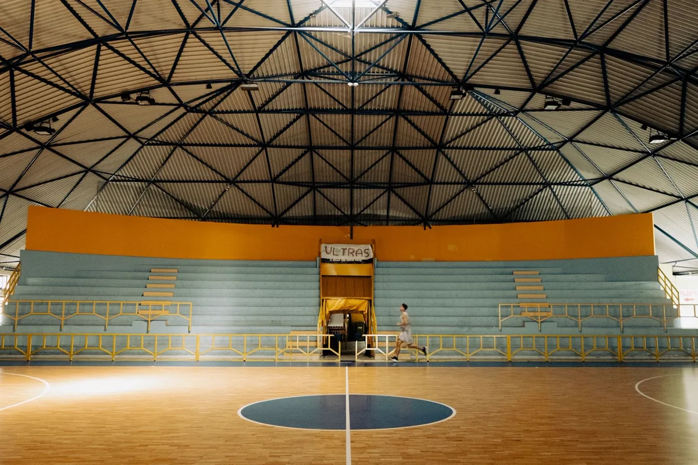
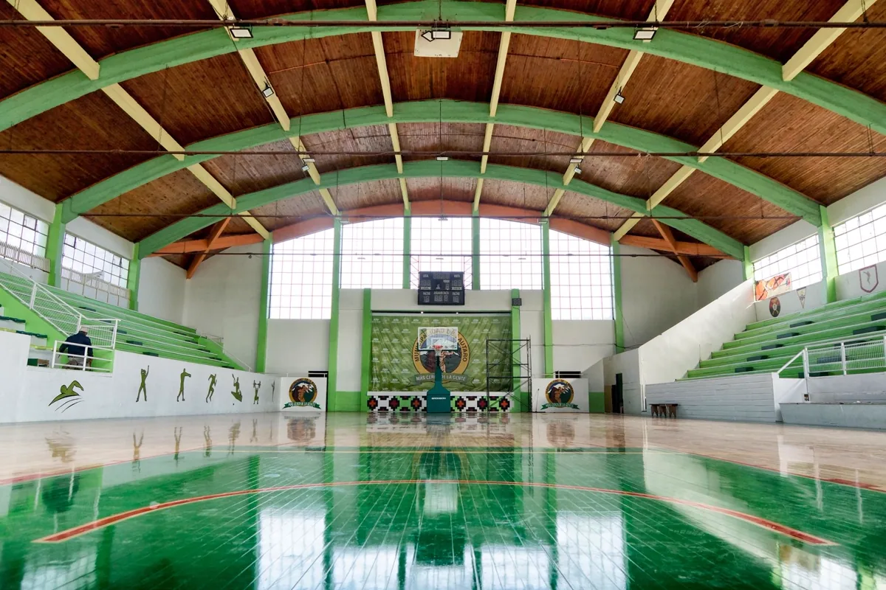

Obra de vão livre exige decisão técnica antes de decisão comercial
Galpão e quadra coberta têm a mesma característica estrutural: vão grande e peso próprio baixo. Isso muda tudo. O carregamento que governa não é o peso da estrutura, é o vento — e, na faixa litorânea capixaba, o esforço de sucção que tenta arrancar a cobertura para cima.
Por isso a obra começa em projeto, não em cotação de telha. Definimos vão, malha de pilares, tipo de cobertura, carga de piso e sistema de fundação a partir do uso pretendido, e só então o orçamento vira comparável entre fornecedores.
Etapas da obra
Estudo, sondagem e terraplenagem
Levantamento topográfico, sondagem SPT, estudo de implantação, verificação de recuos e de taxa de ocupação, drenagem do terreno e terraplenagem. Sem sondagem não há projeto de fundação confiável, e na Grande Vitória o perfil de solo muda muito em poucos metros.
Projeto e aprovação
Projeto arquitetônico, projeto estrutural, instalações elétricas e hidrossanitárias, drenagem e projeto de segurança contra incêndio para o Corpo de Bombeiros. Aprovação na prefeitura e no CBMES corre em paralelo à fundação sempre que possível.
Fundação e estrutura
Execução de sapatas, blocos e estacas conforme o projeto, seguida da montagem da estrutura — metálica, pré-moldada ou mista. A frente de montagem segue o padrão descrito em montagem industrial: controle dimensional, torque e inspeção de solda.
Cobertura e fechamento
Telha metálica simples, termoacústica ou painel isotérmico, com atenção a sobreposição, fixação, calha, rufo e captação de água. Fechamento em telha, alvenaria ou painel. Em obra litorânea, a especificação de revestimento e de fixador resistente à corrosão importa mais que o preço do metro quadrado.
Pisos
Piso industrial dimensionado para carga de empilhadeira e de porta-palete, com controle de planicidade, nivelamento, juntas e cura. Piso esportivo em quadra: base regularizada, impermeabilização quando necessária, pintura com demarcação oficial da modalidade e antiderrapância adequada.
Instalações e entrega
Elétrica, iluminação, SPDA, hidráulica, drenagem, sistema de incêndio e, quando o uso pedir, exaustão e ventilação ou câmara fria. Entrega com as-built, manual de uso e ART de execução.

Galpão: o que definir antes de orçar
| Decisão | O que ela determina |
|---|---|
| Uso (produção, estoque, logística, comércio) | Carga de piso, altura útil, exigência de incêndio e ventilação |
| Altura livre sob a tesoura | Níveis de porta-palete, custo de pilar e de vedação |
| Vão livre entre pilares | Consumo de aço, layout de operação e flexibilidade futura |
| Carga do piso (t/m² e carga de roda) | Espessura, armadura e fundação do piso |
| Docas e altura de carregamento | Implantação, terraplenagem e circulação de carreta |
| Ampliação futura | Escolha do sistema estrutural e posição da empena |
| Distância do mar | Esquema de pintura, tipo de fixador e periodicidade de manutenção |
Quadra poliesportiva coberta
Quadra é um projeto enganosamente simples. A estrutura é leve, o vão é grande e a cobertura funciona como uma asa: o vento de sucção é o esforço crítico, e a fundação precisa ser dimensionada para tração, não só para compressão. Cobertura de quadra que voa em temporal quase sempre falhou nesse ponto.
O que entra no escopo
- Dimensões oficiais da modalidade e faixa de segurança no entorno;
- Estrutura de cobertura calculada conforme a NBR 6123, com fundação verificada à tração;
- Telha com fixação e sobreposição adequadas ao vento da região;
- Piso esportivo com base regularizada, pintura e demarcação;
- Drenagem de piso e captação da água da cobertura;
- Iluminação com nível adequado à prática e ao uso noturno;
- Alambrado, traves, tabelas e redes de proteção;
- Acessibilidade de arquibancada, rota e sanitário;
- Área de lazer complementar, quando houver — ver playgrounds.

Erros que encarecem a obra depois da entrega
| Erro | Custo que aparece depois |
|---|---|
| Piso subdimensionado para a empilhadeira real | Trinca e afundamento em meses; refazer piso com galpão em operação |
| Calha estreita e sem extravasor | Transbordo em chuva forte, infiltração e produto molhado |
| Fixação de telha sem cálculo de sucção | Telha arrancada no primeiro vendaval |
| Pintura inadequada em obra litorânea | Corrosão generalizada em poucos anos e repintura completa |
| Incêndio pensado só no fim da obra | Retrabalho de rede de hidrantes e atraso no habite-se |
| Drenagem do terreno ignorada | Alagamento de pátio e recalque de piso externo |
| Quadra sem verificação de tração na fundação | Cobertura levantada em temporal, com risco a pessoas |
Perguntas frequentes sobre construção de galpão e quadra
Quanto tempo leva para construir um galpão?
Um galpão metálico de porte médio, com terreno regularizado e projeto aprovado, costuma levar de quatro a oito meses do início da fundação à entrega. O maior ganho de prazo da estrutura metálica é que a fabricação corre em oficina enquanto a fundação é executada em campo. O que mais atrasa não é a obra em si: é a aprovação na prefeitura e no Corpo de Bombeiros, e a definição tardia do uso — porque uso define carga de piso, altura útil, docas e exigência de incêndio.
Galpão metálico ou pré-moldado de concreto?
Metálico costuma vencer em vão livre grande, prazo curto e ampliação futura provável. Pré-moldado de concreto costuma vencer em resistência ao fogo, durabilidade em ambiente agressivo e menor manutenção de longo prazo — ponto relevante na faixa litorânea da Grande Vitória, onde a maresia ataca a estrutura metálica e exige esquema de pintura mais caro. Muitas obras acabam mistas: pilares pré-moldados com cobertura metálica.
Que piso usar em galpão industrial e logístico?
O piso é definido pela carga e pela operação, não pela estética. Empilhadeira e porta-palete pedem piso de concreto armado ou com fibras, dimensionado para carga de roda e de montante, com planicidade e nivelamento controlados — sem isso o porta-palete não fica no prumo e a empilhadeira trabalha mal. Área de produção com produto químico pede revestimento resistente; área de alimentos pede piso lavável com caimento para ralo. Juntas de dilatação, cura e serragem no tempo certo definem se o piso vai trincar ou não.
Quadra coberta precisa de projeto estrutural e aprovação?
Precisa. A cobertura de quadra é uma estrutura de vão livre grande e peso próprio baixo, e por isso é muito sensível ao vento — inclusive ao esforço de sucção, que arranca telha e levanta a estrutura em vez de empurrá-la para baixo. Exige projeto conforme a NBR 6123, fundação dimensionada para tração e ART. Em escola e clube, entra também acessibilidade, iluminação, drenagem e, dependendo do porte e do uso, exigência do Corpo de Bombeiros.
Vocês fazem ampliação de galpão em operação?
Sim, e é um dos serviços mais pedidos. Antes de projetar a ampliação, verificamos a estrutura existente: seções reais, estado das ligações, corrosão e capacidade da fundação atual. Ampliar amarrando o trecho novo em uma estrutura que já está no limite é o caminho mais rápido para comprometer as duas. A obra é planejada por etapas, com isolamento da frente e proteção da operação.
Galpões e quadras na Grande Vitória
Obras industriais, logísticas, comerciais e esportivas nas cidades da região:
Vai construir galpão ou cobrir uma quadra?
Informe a área, o uso e o endereço do terreno. Retornamos com escopo, etapas e estimativa.